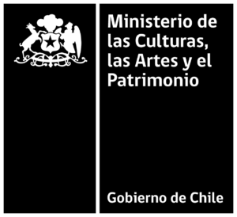
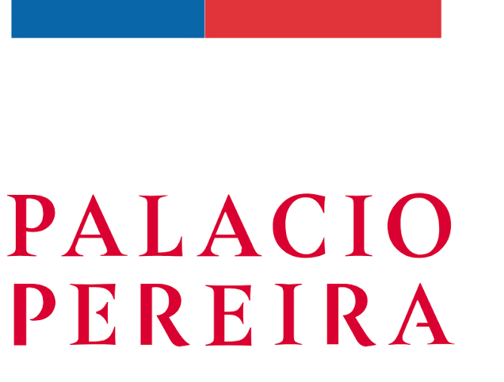
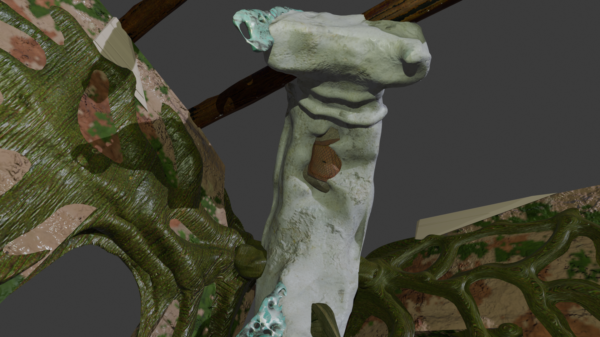
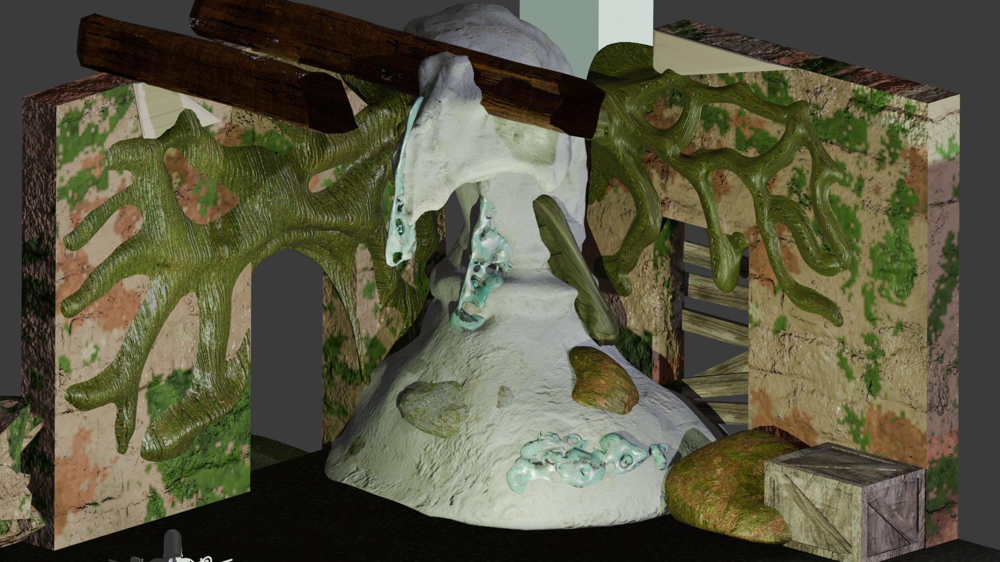
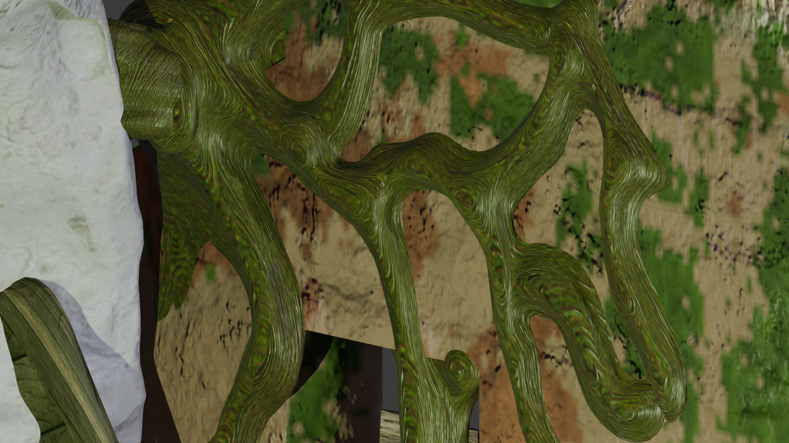

Sinopsis
Ser Geo-Vivo diseñado para una Experiencia VR en Auratán. Basado en arquitectura blanda, este ser cobra vida a base de AlbedoX.



Título de la sección 1
Escribe aquí la descripción de esta sección.

Título de la sección 2
Escribe aquí la descripción de esta sección.

Título de la sección 3
Escribe aquí la descripción de esta sección.